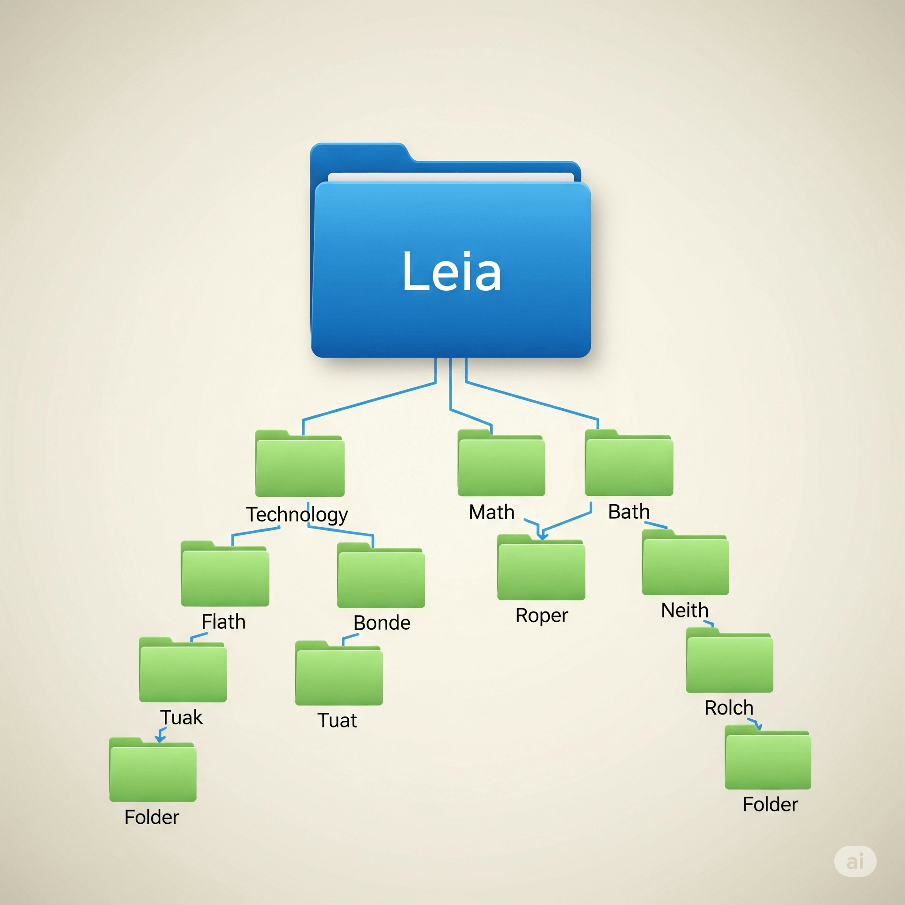

Ton identité
Ton compte ENT est ta carte d’identité numérique : personnel, intransmissible, protégé par un mot de passe robuste.
🔑 La clé de ta maison numérique : ne partage jamais ton mot de passe ; déconnecte‑toi en partant.
⚠️ Danger : n’enregistre pas les mots de passe dans le navigateur d’un poste partagé.
Ton espace dans l’ENT
Classe tes travaux dans une arborescence logique (Matière → Chapitre → Projet). Sauvegarde sur le réseau ENT, pas en local.

📁 Ton classeur numérique : un dossier par matière, des sous‑dossiers par projet.
⚠️ Danger : Bureau, « Documents » et « Téléchargements » locaux sont temporaires. Enregistre toujours sur l’ENT.
Ta procédure
Un rituel en fin de cours garde la salle propre et sûre pour tous.
🧹 Laisser la table propre : tu penses à l’élève suivant.
⚠️ Danger : oublier de se déconnecter met en péril tes données et celles des autres.
Ta responsabilité
Pendant l’heure, tu es responsable du poste. Respect du matériel et entraide sont la norme.
🤝 Esprit d’équipe : le bon fonctionnement dépend de chacun.